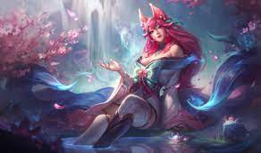
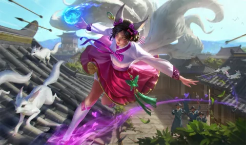
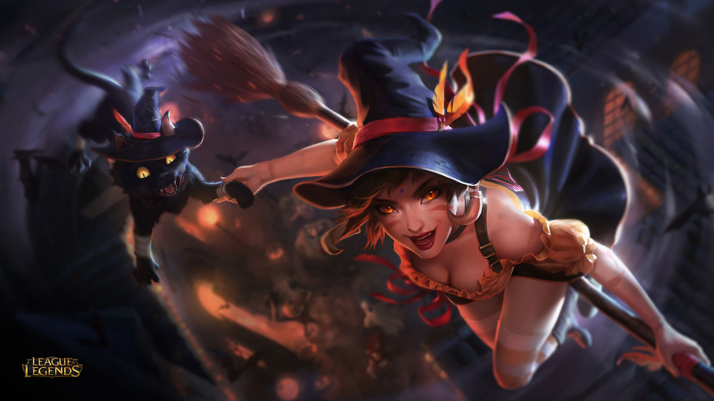
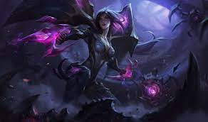
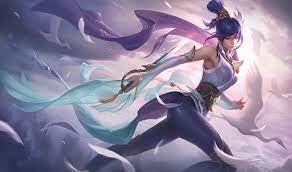

Top mejores personajes de League of legends by Shyppeta



Ahri, la zorra de nueve colas
Ahri, la mujer zorro de las nueve colas es una vastaya que merodea Runeterra en busca de las memorias de su clan. Ella puede manipular las emociones de los mortales, y es capaz de darle forma de bolas a la magia que usa para pelear.Katarina, la hija siniestra
Nacida en una de las familias nobles más respetadas de Noxus, Katarina Du Couteau contó con una posición privilegiada desde pequeña. Mientras que Cassiopeia, su hermana menor, se parecía a su políticamente brillante madre, Katarina siguió los pasos de su padre, por lo que el astuto General Du Couteau la alentó a aprender el manejo de la espada, no para eliminar a los enemigos del imperio con osada brutalidad, sino con precisión mortal. Él era un maestro estricto con sus alumnos, así como difícil de impresionar.Akali, la asesina sigilosa
Los Kinkou son los autodenominados guardianes del equilibrio sagrado de Jonia. Los leales acólitos de la orden recorren los reinos espirituales y materiales, median en los conflictos que surgen entre los dos y, si es necesario, intervienen por la fuerza. Entre sus filas emergió Akali, la famosa Puño de la Sombra e hija de Mayym Jhomen Tethi. Mayym y su pareja, Tahno, criaron a su hija en la orden de los Kinkou bajo el vigilante liderazgo del gran maestro Kusho, el Ojo del Crepúsculo.Irelia, la danza de las cuchillas
Desde que era pequeña, Xan Irelia estaba fascinada por la elegancia y la belleza del movimiento humano. Bajo la tutela de su abuela, aprendió los bailes tradicionales de su región. A pesar de cuestionar su supuesta conexión mística con el Espíritu de Jonia, el amor que sentía por los bailes era verdadero. En su búsqueda por dominar el arte, dejó su hogar para estudiar con algunos de los intérpretes más respetados de toda Jonia, en el Placidium de Navori.Kassadin, el caminante del vacío
Kassadin comenzó su vida como un humilde desplazado, atravesando las inhóspitas arenas del Gran Sai junto con caravanas mercantiles para alejar a los depredadores de sus bienes más valiosos. Tras sobrevivir varias de estas caminatas a través del desierto, sirvió menos como una carnada y más como un guía.Gwen, la costurera consagrada
Lo poco que Gwen recuerda de su pasado, lo recuerda con amor. La costurera y la muñeca pasaban sus días confeccionando, Gwen con las tijeras en sus manos inmóviles mientras su creadora cosía cerca de ella con hilo y aguja. Por las noches, las dos se escabullían debajo de la mesa del comedor y la costurera desafiaba a Gwen a duelos inventados: el choque de los cubiertos contra las tijeras resonaba en la cocina iluminada por velas.Menciones honorificas

Lux
Luxanna, o Lux, como prefiere que la llamen, creció en la ciudad demaciana de Meraplata Alta junto a su hermano mayor Garen. Los dos nacieron en el seno de la prestigiosa familia Crownguard, que durante generaciones ha servido como protectora del rey de Demacia. Su abuelo le salvó la vida al rey en la Batalla del Colmillo de la Tormenta y su tía Tianna fue designada comandante del regimiento de élite conocido como la Vanguardia Impertérrita antes de que Lux naciera.

Nidalee
Muy pocos residen en las peligrosas y malditas tierras al sur de la Gran Barrera, y mucho menos campeones. Gran parte de ese mundo aún lleva las cicatrices de las pasadas Guerras Rúnicas, en especial la misteriosa selva de Kumungu. En estos extraños lugares existen tesoros largamente olvidados por los que muchos arriesgan su vida y su integridad física. La campeona conocida como Nidalee era sólo una muchacha que viajaba con sus padres en busca de un tesoro cuando se perdieron en las frondosas y lluviosas selvas. La selva no tiene piedad, y fue testigo de cómo sus padres sufrían y agonizaban hasta morir víctimas de una misteriosa y virulenta enfermedad.
Vayne
Shauna Vayne es una cazadora de monstruos letal y despiadada que ha jurado por su vida encontrar y matar al demonio que asesinó a su familia. Provista de una ballesta que lleva en la muñeca y un corazón ansioso de venganza, Vayne solo es verdaderamente feliz cuando mata a practicantes de las artes oscuras o a sus creaciones.

Kai'sa
Tal vez lo más destacable sobre la audaz cazadora del Vacío conocida como Kai'Sa es lo simple que fue el comienzo de su vida. Ella no fue descendiente de guerreros tribales curtidos por generaciones de batalla ni la trajeron desde tierras distantes para pelear contra la desconocida amenaza que acechaba debajo de Shurima. Nada de eso. Era una chica común y corriente, hija de padres amorosos que consideraban los desiertos implacables sureños como su hogar. Allí, ella pasaba los días jugando con sus amigos y las noches soñando con cuál sería su lugar en el mundo.

Fiora
Fiora, la duelista más temida de Valoran, es tan famosa por su estilo brusco y su astucia en asuntos políticos como por la velocidad de su estoque. Nació en el seno de la noble familia Laurent de Demacia, y tomó el control de la familia de manos de su padre a raíz de un escándalo que casi acaba con ellos. Ahora su misión es recuperar el lugar de los Laurent como una de las familias más nobles e importantes del reino.